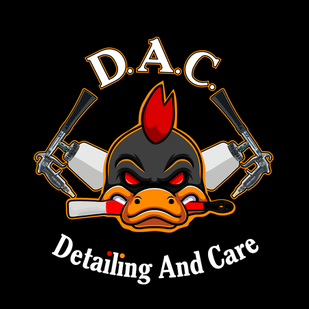
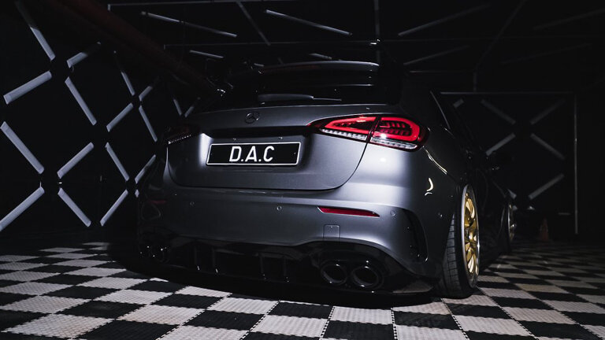
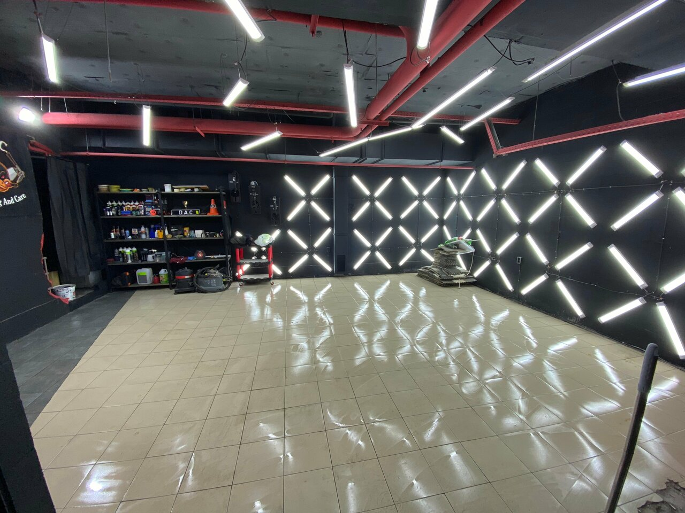
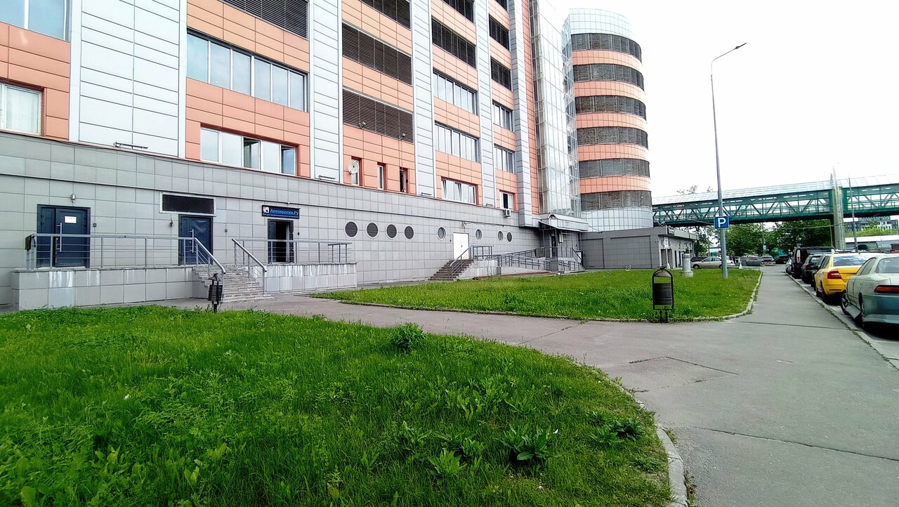

★★★★★
«Обслуживаю все свои автомобили и мотоциклы исключительно здесь»

D.A.C.DETAILING AND CARE+7 916 267-59-55
ДЕТЕЙЛИНГ-СТУДИЯ · МОСКВА
Чистота салона. Глубина цвета. Защита кузова.
Уход за автомобилем, который видно.
01 / УСЛУГИ
От ухода за салоном до защиты кузова.
Выберите то, что нужно вашему автомобилю.
Цены — по каталогу студии на 23 октября 2026 года. Итоговую стоимость для вашего автомобиля подтвердит мастер.
ЧТО НУЖНО ВАШЕМУ АВТОМОБИЛЮ?
Поможем выбрать направление ухода.
Точный состав работ обсудите с мастером.
02 / ПОРТФОЛИО
Реальные фотографии из карточки студии.
Нажмите на снимок, чтобы рассмотреть детали.

DETAILING AND CARE
ДАК — студия комплексного ухода за автомобилями в Москве. Работаем с кузовом и салоном: от химчистки и полировки до плёнок и защитных покрытий.
03 / ОТЗЫВЫ
«Обслуживаю все свои автомобили и мотоциклы исключительно здесь»
«Лучшие, работаем уже много лет !!! Ни разу не подводили !»
«Машина как новая, блеск нереальный.»
Рейтинг и количество отзывов — по карточке студии на 23 октября 2026 года. Читать отзывы полностью ↗
04 / НА СВЯЗИ
Москва, 1-я улица Измайловского Зверинца, 8
Время визита согласуйте с мастером.
Канал с работами студии ↗
МОСКВА · ИЗМАЙЛОВОПостроить маршрут↗